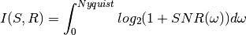
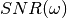
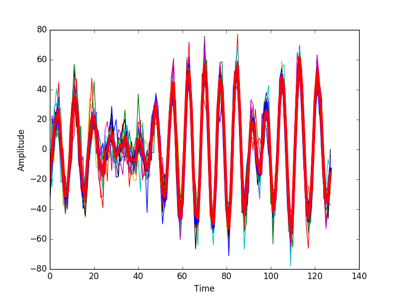
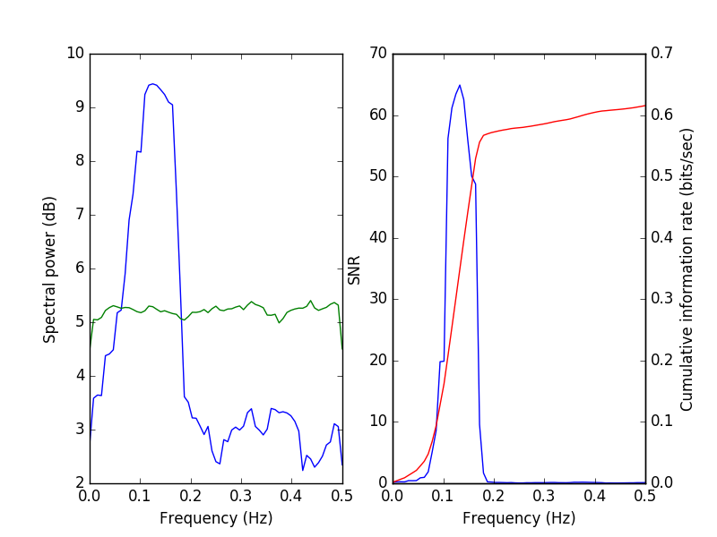
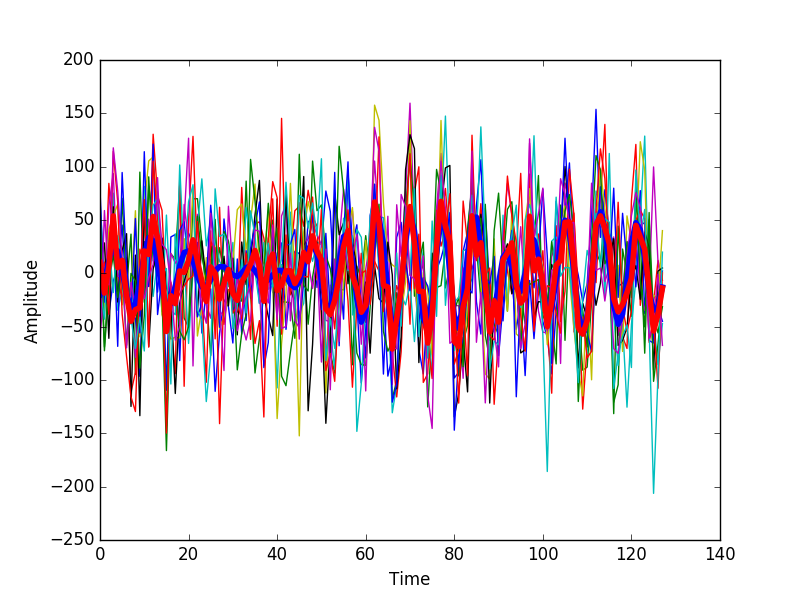
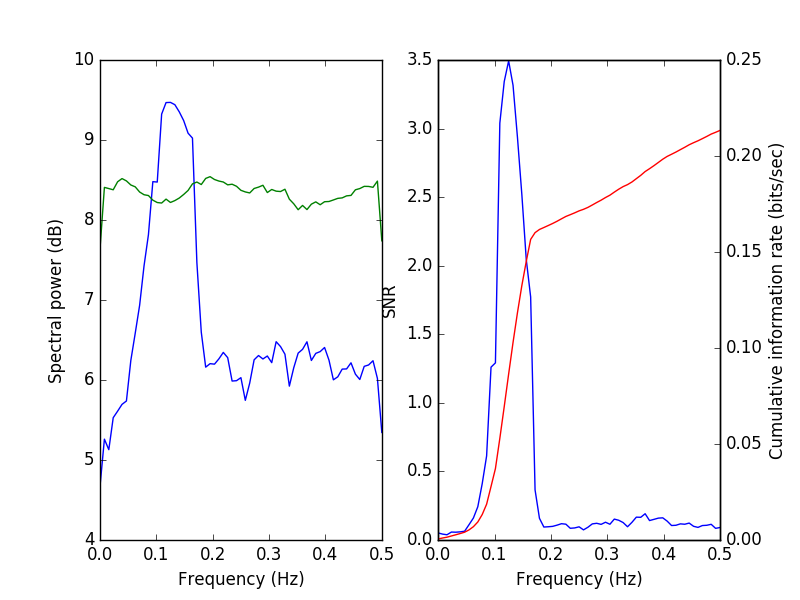
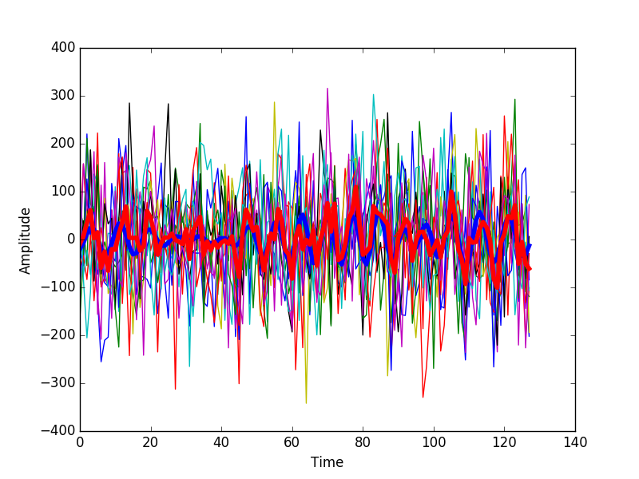
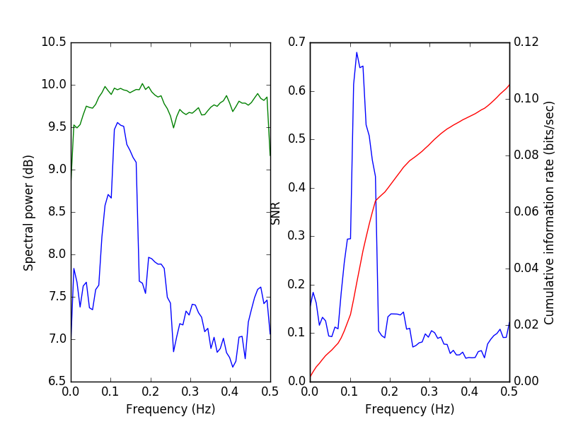

Caclulation of Signal to noise and information¶
This method is based on ideas described in [Borst1999] (Figure 2) and [Hsu2004]. The calculation can be used, for example, in order to estimate the channel capacity of a neuron responding to a repeated stimulus.
The estimate of the information is based on the formula

Where  is the ratio of the signal power and the noise power at the
frequency band centered on  .This equation holde true for a Gaussian
channel and is an upper bound for all other cases.
.This equation holde true for a Gaussian
channel and is an upper bound for all other cases.
The signal power is estimated as the power of the mean response to repeated presentations of the same signal and the noise power is calculated as the average of the power in the deviation from this average in each trial
We import the neccesary modules:
import numpy as np
import matplotlib.pyplot as plt
import nitime.utils as utils
import nitime.timeseries as ts
import nitime.viz as viz
For this example, we generate an auto-regressive sequence to be the signal:
ar_seq, nz, alpha = utils.ar_generator(N=128, drop_transients=10)
ar_seq -= ar_seq.mean()
The signal will be repeated several times, adding noise to the signal in each repetition:
n_trials = 12
fig_snr = []
sample = []
fig_tseries = []
We add different levels of noise to the ar_seq variable, in order to demonstrate the effects of adding noise on signal to noise ratio, as well as the calculated information
for idx, noise in enumerate([1, 10, 50, 100]):
Make n_trials repetitions of the signal:
sample.append(np.ones((n_trials, ar_seq.shape[-1])) + ar_seq)
n_points = sample[-1].shape[-1]
Add noise:
for trial in range(n_trials):
sample[-1][trial] += np.random.randn(sample[-1][trial].shape[0]) * noise
This is the estimate of the signal:
sample_mean = np.mean(sample[-1], 0)
We plot a comparison of the actual signal (blue) and this estimate(blue). The thinner lines n other colors, represent the individual trials:
fig_tseries.append(plt.figure())
ax = fig_tseries[-1].add_subplot(1, 1, 1)
ax.plot(sample[-1].T)
ax.plot(ar_seq, 'b', linewidth=4)
ax.plot(sample_mean, 'r', linewidth=4)
ax.set_xlabel('Time')
ax.set_ylabel('Amplitude')
We present this at different levels of noise. With low noise, the estimate of the signal and also the response of the system at different repetitions is very similar to the original signal.
tseries = ts.TimeSeries(sample[-1], sampling_rate=1.)
fig_snr.append(viz.plot_snr(tseries))
{kind=link}
A special visualization function viz.plot_snr() is used in order to
display the signal power (blue) and the noise power (green), both in the
left sub-plot. In addition, the SNR (blue) and the cumulative information
(as a function of frequency bands, starting from low frequencies, in red)
are dislplayed in the right subplot.
{kind=link}
With more added noise, the estimate of the signal deviates further from the signal.
{kind=link}
The signal power remains rather similar, but the noise power increases (across all bands). As a consequence, the signal to noise ratio decreases and the accumulated information decreases
{kind=link}
This becomes even more apparent with more noise:
 {kind=link}
{kind=link}
Until, with the largest amplitued of noise, the signal power is almost completely overwhelmed with noise:
 {kind=link}
{kind=link}
Finally, we use plot_snr_diff() in order to compare information
transmission (on the left) and the signal to noise ratio (on the right) between
the two last noise levels:
ts1 = ts.TimeSeries(sample[-1], sampling_rate=1.)
ts2 = ts.TimeSeries(sample[-2], sampling_rate=1.)
fig_compare = viz.plot_snr_diff(ts1, ts2)
plt.show()
{kind=link}
References
[Hsu2004] Hsu A, Borst A and Theunissen, FE (2004) Quantifying variability in neural responses ans its application for the validation of model predictions. Network: Comput Neural Syst 15:91-109
[Borst1999] Borst A and Theunissen FE (1999) Information theory and neural coding. Nat Neurosci 2:947-957
Example source code
You can download the full source code of this example.
This same script is also included in the Nitime source distribution under the
doc/examples/ directory.